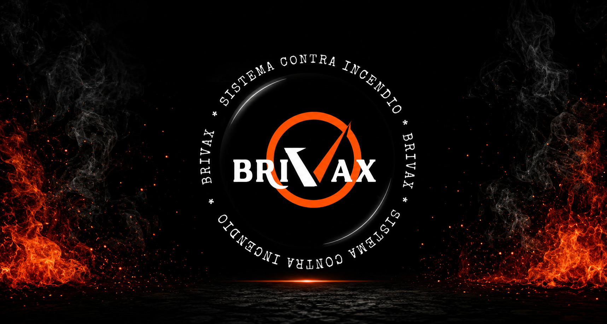
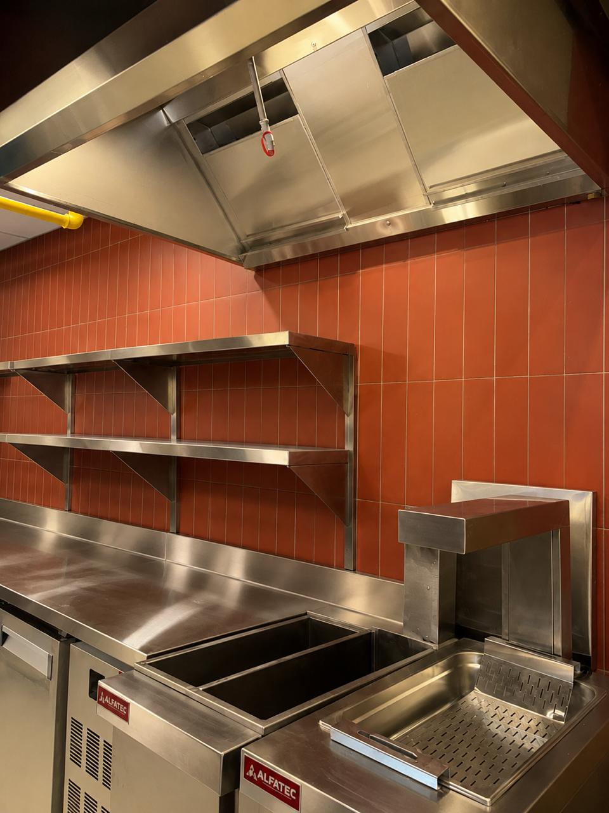
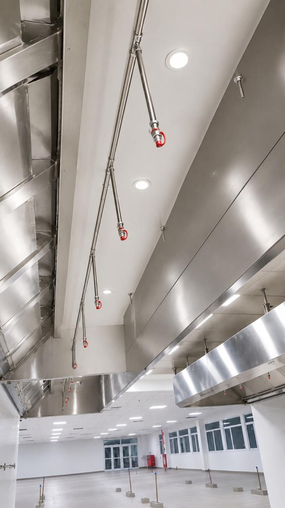
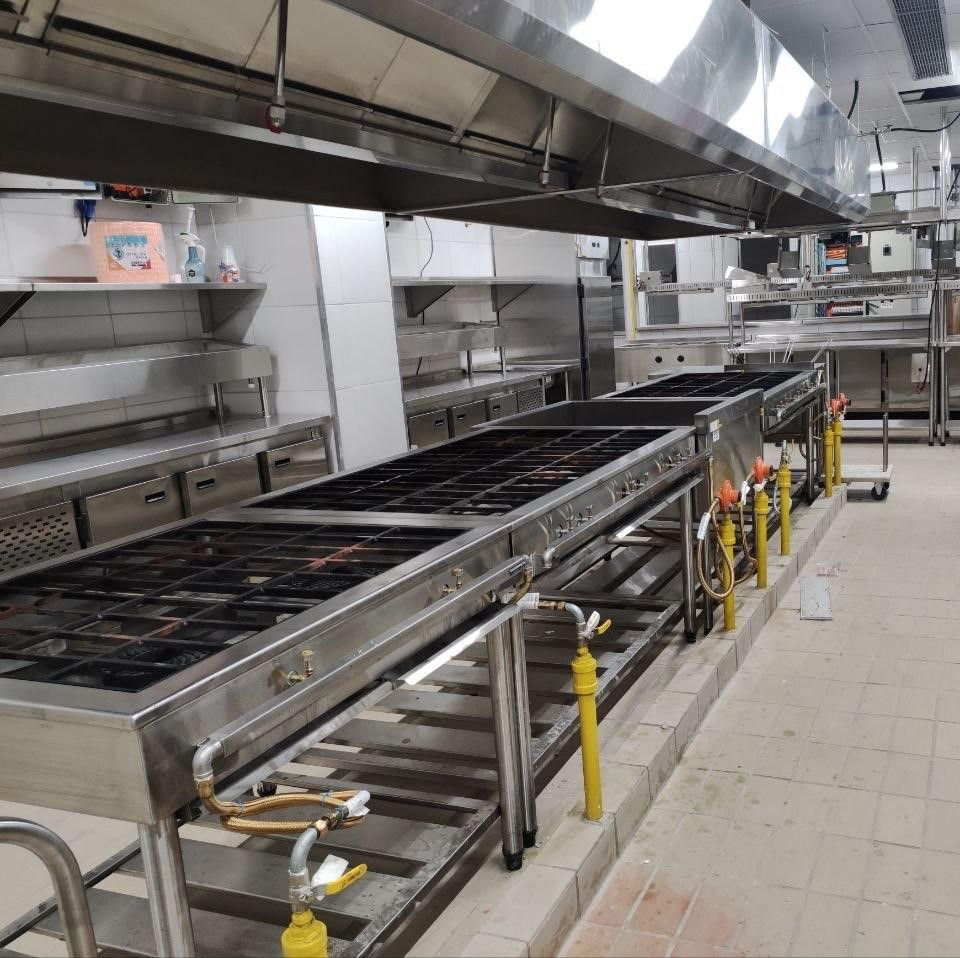
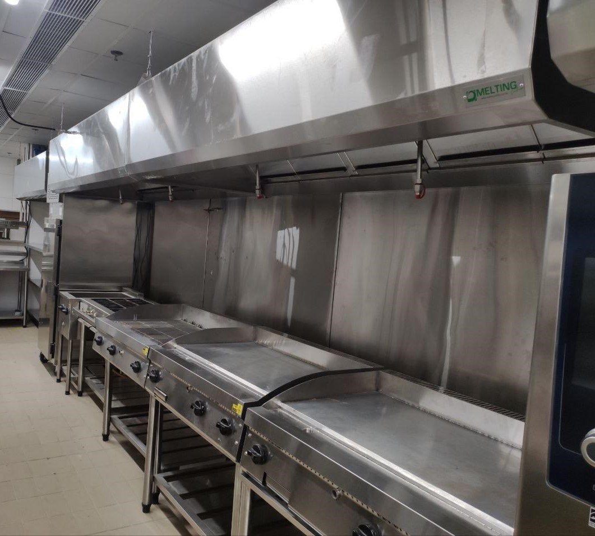
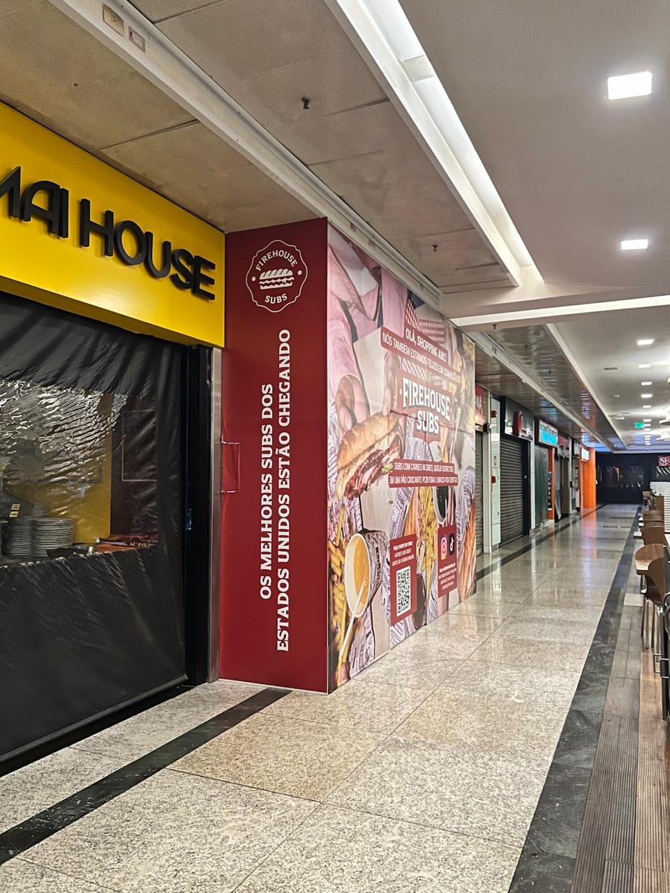
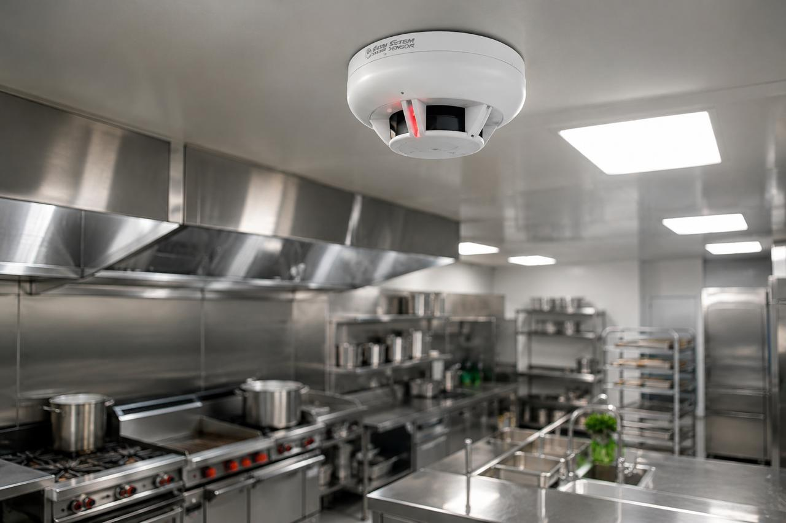
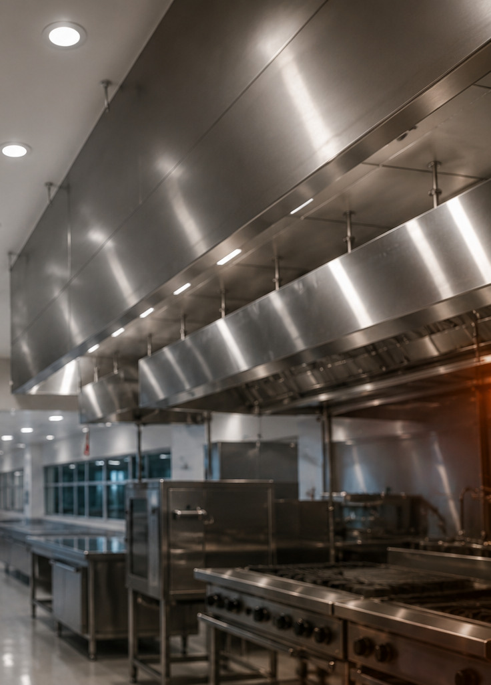

Vamos proteger a sua operação?
Solicite uma avaliação técnica e descubra a solução ideal para o seu negócio.
SOLICITAR ORÇAMENTO
Especialistas em sistemas de prevenção e combate a incêndio, desenvolvendo soluções técnicas para proteger pessoas, patrimônios e operações em todo o Brasil.
A Brivax é especializada em sistemas de prevenção e combate a incêndio para cozinhas industriais, restaurantes, hospitais, franquias e operações comerciais.
Atuamos desde a análise técnica e planejamento até a implantação, manutenção e vistoria dos sistemas, desenvolvendo soluções personalizadas para cada cliente e cada operação.
Nosso objetivo é entregar projetos seguros, confiáveis e preparados para agir antes que o risco se torne uma perda, sempre com foco na qualidade da execução, conformidade técnica e continuidade operacional.
Cada solução desenvolvida pela Brivax é baseada em princípios que garantem segurança, qualidade e responsabilidade técnica em todas as etapas do processo.
Projetamos sistemas para proteger pessoas, patrimônios e operações, reduzindo riscos e proporcionando maior tranquilidade aos nossos clientes.
Utilizamos equipamentos confiáveis, processos padronizados e mão de obra especializada para garantir alto desempenho e durabilidade.
Todos os serviços são executados conforme critérios técnicos e boas práticas, assegurando soluções eficientes e adequadas a cada aplicação.
Mais do que instalar sistemas, entregamos soluções completas para prevenção e combate a incêndio, acompanhando nossos clientes em todas as etapas do projeto.
Equipe preparada para desenvolver soluções personalizadas conforme as necessidades de cada operação.
Cada sistema é planejado de acordo com o ambiente, garantindo eficiência e conformidade técnica.
Profissionais capacitados para implantação, manutenção, inspeção e suporte técnico especializado.
Utilizamos componentes e equipamentos desenvolvidos para oferecer desempenho, durabilidade e segurança.
Acompanhamento completo antes, durante e após a implantação dos sistemas.
Serviços periódicos para manter o funcionamento adequado dos sistemas e aumentar sua vida útil.
Cada segmento possui necessidades específicas. Desenvolvemos projetos personalizados para garantir segurança, desempenho e continuidade operacional em diferentes tipos de empreendimento.

Soluções para cozinhas comerciais e operações gastronômicas, garantindo proteção e continuidade do serviço.

Projetos voltados para cozinhas hospitalares, priorizando confiabilidade, segurança e conformidade técnica.

Proteção para ambientes de alta demanda, preparados para operar com eficiência e segurança.

Implantação e manutenção de sistemas para restaurantes, operações comerciais e praças de alimentação em shopping centers.

Soluções padronizadas para redes franqueadas, respeitando os requisitos técnicos de cada operação.

Projetos desenvolvidos para cozinhas industriais, refeitórios corporativos e ambientes de produção.

Cada projeto executado pela Brivax é desenvolvido considerando as características específicas da operação, garantindo soluções eficientes, confiáveis e em conformidade com as normas técnicas.
Nossa equipe acompanha todas as etapas do processo, desde a avaliação técnica e planejamento até a implantação, testes e manutenção, oferecendo suporte completo aos nossos clientes.
Esse compromisso permite entregar sistemas preparados para proteger pessoas, patrimônios e garantir a continuidade das operações.
Solicite uma avaliação técnica e descubra a solução ideal para o seu negócio.
SOLICITAR ORÇAMENTO